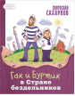

В Стране Семи городов живут искусные и трудолюбивые мастера - парикмахеры, кузнецы, плотники... Однажды у двух корабельщиков похищают старинный чертеж. Гак и Буртик отправляются в погоню за похитителями и попадают в Страну бездельников. Они даже представить себе не могли, до чего может довести людей безделье... Для младшего школьного возраста.